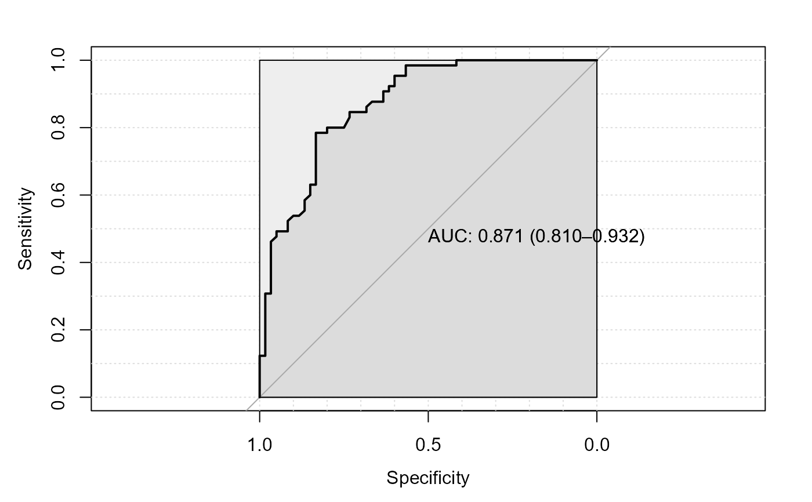

Random Forest Prediction Based Score
Arguments
- x
A phyloseq object
- group_col
A column in
phyloseq::sample_datawith all control and case labels.- case_label
A character string specifying case/disease labels in group_col.
- seed_value
The random seed of your session for reproducibility.
- add_tuneRF_params
A list of arguments to pass for
randomForest::tuneRF- ntree
Number of trees. See
randomForest::randomForest- plot_roc
Logical TRUE or FALSE to plot ROC curve.
- ...
Additional arguments if necessary for
randomForest::randomForest.
Details
An out-of-bag probability of Random Forest of being classified as case or diseased group.
The original article Saffouri GB, Shields-Cutler R et al. 2019
reported a Symptom Index abbreviated as SI. In this approach the feature
abundances are used for Random Forest classification and the resulting
out of bag (OOB) predicted probability of being classified in disease group
is considered as an SI or also dysbiosis index. The dysbiosisOBB
function in this package allows for calculating this measure with some level
of freedom of 'tuneRF' and 'randomForest' parameters via the randomForest
R package.
References
Saffouri GB, Shields-Cutler R et al. (2019). Small intestinal microbial dysbiosis underlies symptoms associated with functional gastrointestinal disorders. Nature communications, 10(1), pp.1-11.
Examples
data("WirbelJ_2018")
# data are relative abundances summed to 100 or
# near 100 val
dysbiosis.oob <- dysbiosisOBB(WirbelJ_2018,
group_col = "disease",
case_label = "CRC",
seed_value = 1235,
add_tuneRF_params = list(ntreeTry=100,
stepFactor=1.5,
improve=0.01,
trace=TRUE,
dobest=FALSE),
ntree = 100, # increase for real data
plot_roc = TRUE)
#> The random seed of your session for reproducibility is: 1235
#> mtry = 23 OOB error = 20.8%
#> Searching left ...
#> mtry = 16 OOB error = 22.4%
#> -0.07692308 0.01
#> Searching right ...
#> mtry = 34 OOB error = 19.2%
#> 0.07692308 0.01
#> mtry = 51 OOB error = 17.6%
#> 0.08333333 0.01
#> mtry = 76 OOB error = 18.4%
#> -0.04545455 0.01
#> The mtry used is : 51
#> Setting levels: control = CRC, case = healthy
#> Setting direction: controls > cases

head(dysbiosis.oob)
#> oob.score study_name subject_id body_site
#> CCMD11006829ST-21-0 0.9459459 WirbelJ_2018 CCMD11006829ST-21-0 stool
#> CCMD12232071ST-21-0 0.7714286 WirbelJ_2018 CCMD12232071ST-21-0 stool
#> CCMD13071240ST-21-0 0.6969697 WirbelJ_2018 CCMD13071240ST-21-0 stool
#> CCMD13934959ST-21-0 0.7714286 WirbelJ_2018 CCMD13934959ST-21-0 stool
#> CCMD14479708ST-21-0 0.6578947 WirbelJ_2018 CCMD14479708ST-21-0 stool
#> CCMD18872694ST-21-0 0.8787879 WirbelJ_2018 CCMD18872694ST-21-0 stool
#> study_condition disease age age_category gender country
#> CCMD11006829ST-21-0 CRC CRC 42 adult female DEU
#> CCMD12232071ST-21-0 CRC CRC 75 senior male DEU
#> CCMD13071240ST-21-0 CRC CRC 66 senior female DEU
#> CCMD13934959ST-21-0 CRC CRC 56 adult male DEU
#> CCMD14479708ST-21-0 CRC CRC 74 senior male DEU
#> CCMD18872694ST-21-0 CRC CRC 63 adult male DEU
#> non_westernized sequencing_platform DNA_extraction_kit
#> CCMD11006829ST-21-0 no IlluminaHiSeq Gnome
#> CCMD12232071ST-21-0 no IlluminaHiSeq Gnome
#> CCMD13071240ST-21-0 no IlluminaHiSeq Gnome
#> CCMD13934959ST-21-0 no IlluminaHiSeq Gnome
#> CCMD14479708ST-21-0 no IlluminaHiSeq Gnome
#> CCMD18872694ST-21-0 no IlluminaHiSeq Gnome
#> PMID number_reads number_bases minimum_read_length
#> CCMD11006829ST-21-0 30936547 83456496 7310970279 45
#> CCMD12232071ST-21-0 30936547 65269931 5370021950 2
#> CCMD13071240ST-21-0 30936547 63427722 5486983593 45
#> CCMD13934959ST-21-0 30936547 36979669 3186342244 45
#> CCMD14479708ST-21-0 30936547 65475493 5637718108 45
#> CCMD18872694ST-21-0 30936547 55300211 4780095276 45
#> median_read_length NCBI_accession curator BMI tnm
#> CCMD11006829ST-21-0 94 <NA> Paolo_Manghi 35 t3n0m0
#> CCMD12232071ST-21-0 88 <NA> Paolo_Manghi 28 t3n2m0
#> CCMD13071240ST-21-0 93 <NA> Paolo_Manghi 23 t3n0m0
#> CCMD13934959ST-21-0 93 <NA> Paolo_Manghi 27 t3n0m0
#> CCMD14479708ST-21-0 92 <NA> Paolo_Manghi 26 t3n0m1
#> CCMD18872694ST-21-0 93 <NA> Paolo_Manghi 25 t3n1m0
#> ajcc nspecies group
#> CCMD11006829ST-21-0 ii 144 case
#> CCMD12232071ST-21-0 iii 110 case
#> CCMD13071240ST-21-0 ii 126 case
#> CCMD13934959ST-21-0 ii 100 case
#> CCMD14479708ST-21-0 iv 110 case
#> CCMD18872694ST-21-0 iii 145 case